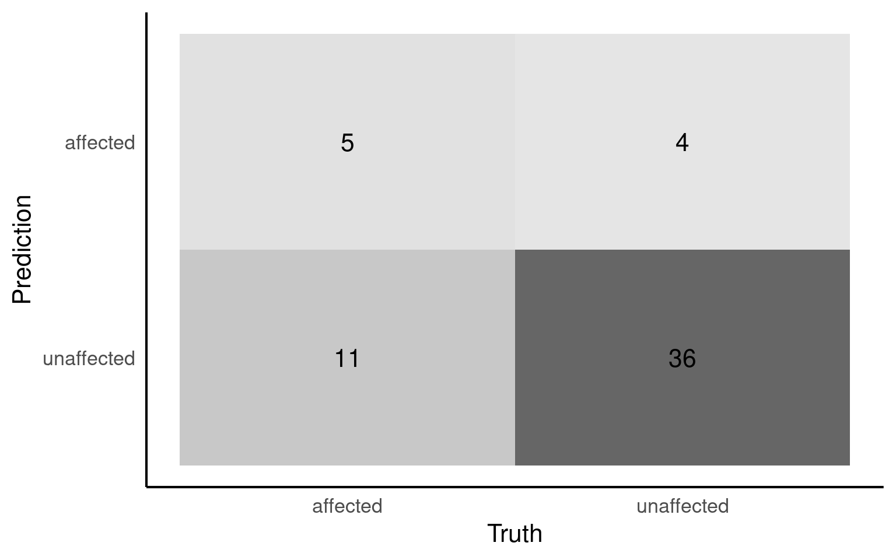
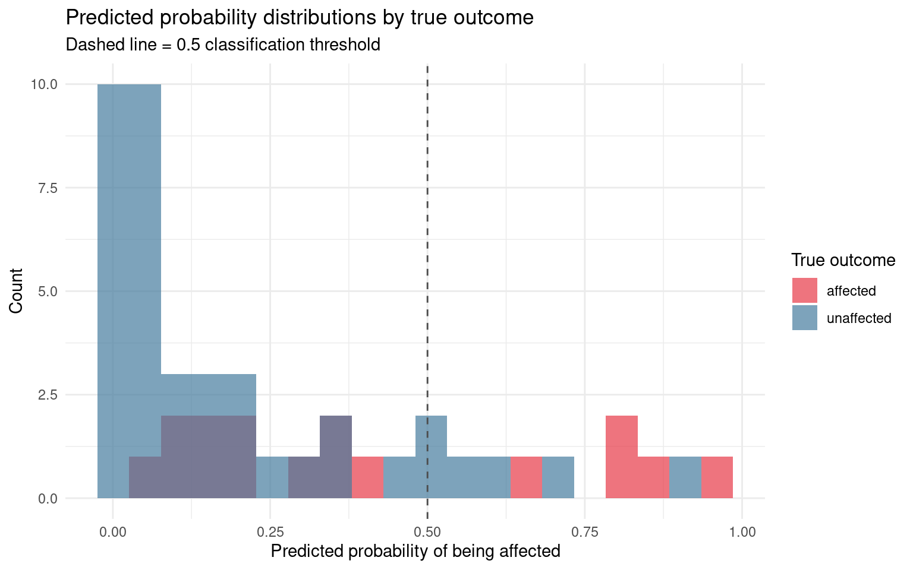
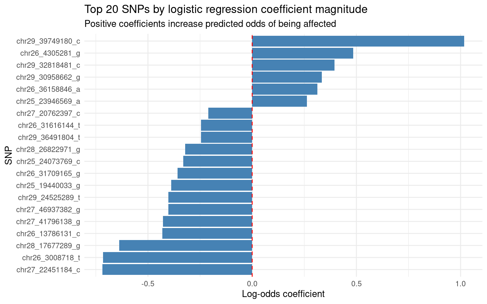

20 Machine Learning Classification
20.1 Introduction
In Workshop 1 we predicted a continuous outcome — bat age — from methylation data. The outcome could take any value along a scale, and we evaluated our models using RMSE. In this workshop the question is structurally different: we want to predict whether a dog is affected by cleft lip based on its SNP genotype profile. The outcome is binary — affected or unaffected — and this requires a different modelling approach and an entirely different set of evaluation metrics.
Logistic regression is the natural extension of linear regression to binary outcomes. Rather than predicting a continuous value directly, it predicts the probability that an observation belongs to a particular class. A probability above 0.5 is classified as affected; below 0.5 as unaffected. The model’s coefficients still represent the relationship between predictors and the outcome, but now in terms of log-odds rather than raw units.
The dataset comes from Greer et al. (2015, PLOS Genetics), who investigated the genetic basis of cleft lip in Nova Scotia Duck Tolling Retrievers.
20.1.1 SNP encoding
SNP genotypes are coded as 0, 1, or 2, representing the count of the reference allele at each locus. We work with a reduced dataset containing SNP loci from chromosomes 25 to 29 — the genomic region implicated in the original study. This subset exists for computational convenience; results should not be interpreted as a full GWAS analysis.
20.1.2 A note on evaluation metrics
In Workshop 1 we used RMSE to evaluate model performance. RMSE is appropriate for continuous outcomes but meaningless for binary classification. Here we use a different set of metrics: the confusion matrix, sensitivity, specificity, and the ROC curve. Each is introduced when it is needed rather than all at once.
20.1.3 A note on how we use AI in this workshop
As in Workshop 1, AI assistance is appropriate for data exploration where outputs are immediately verifiable. All modelling code is written by you. The ability to critically evaluate AI-generated code depends on having built the underlying knowledge yourself first — which is what the modelling sections are designed to do.
20.1.4 Learning Objectives
By the end of this workshop, you will:
- Load and prepare a non-standard plain text genomic dataset in R
- Recode a PLINK phenotype variable into a binary factor appropriate for classification
- Construct a stratified train/test split for a binary outcome
- Fit a logistic regression model using
tidymodels - Interpret a confusion matrix and explain each cell biologically
- Calculate and interpret sensitivity, specificity, and accuracy
- Produce and interpret a ROC curve and AUC value
- Visualise predicted probability distributions by outcome class
- Extract and interpret logistic regression coefficients on the log-odds scale
20.2 Setup — Getting Started
Clone the GitHub Classroom repository for this workshop using the link on your course page. Once cloned, open the RStudio project. You should see the following structure already in place:
dog_snp_workshop/
├── .github/
│ └── copilot-instructions.md # partially complete - review
├── data/
│ └── cleft_lip_snps.txt # raw — never modify this file
├── scripts/
│ ├── 01_explore.R
│ └── 02_model.R
├── outputs/
└── README.mdOpen scripts/01_explore.R and confirm the packages load without errors.
If any package fails to load, install it with install.packages("package_name") and try again. Run install.packages(c("tidyverse", "here", "janitor", "skimr", "tidymodels", "performance")) to install everything needed for both scripts at once.
Part 1 — Data Exploration
Before building any model it is essential to understand the data. This section asks you to produce a structured exploration of the dog SNP dataset covering completeness, phenotype distribution, and genotype structure.
20.2.1 What to produce
Whether you wrote the code yourself or used AI assistance, produce the following before answering the questions:
- A report of dataset dimensions
- A column-level check for missing values
- A check for duplicate rows with an explicit count
- A bar chart of phenotype counts saved to
outputs/ - Genotype frequency distributions for a sample of SNP columns saved to
outputs/
20.2.2 Step 1 — Loading and preparing the data
The data file is a space-separated plain text file in PLINK format. It contains six non-predictor columns — FID, IID, PAT, MAT, SEX, and PHENOTYPE — followed by SNP genotype columns.
If you are unsure how to load a space-separated file or why the PLINK columns need special handling, read the note below before writing any code.
PLINK is a standard format in genetics. The first six columns are pedigree and phenotype information:
- FID and IID — family and individual identifiers. Text labels with no predictive value.
- PAT and MAT — parent identifiers. Not used here.
- SEX — coded 1 (male) or 2 (female). A genuine biological variable but excluded from this analysis without explicit justification — see Reflection 1.
- PHENOTYPE — coded 1 (unaffected) and 2 (affected). This must be recoded before modelling.
SNP columns are named by chromosome and position — for example chr25.11293074_A means chromosome 25, position 11,293,074, reference allele A. Genotype values are 0, 1, or 2 representing the count of the reference allele.
read_table() from readr handles space-separated files with variable whitespace. read_csv() will not work here — it expects commas as delimiters and will collapse all columns into one.
After running this, confirm that the column names are in snake_case and that the number of columns matches the number of SNP loci plus six.
20.2.3 Step 2 — Completeness checks
Check dimensions, missing values, and duplicate rows before doing anything else.
Missing values in PLINK files are sometimes coded as -9 rather than NA. Check the genotype value range explicitly — not just whether R reports NAs.
skim() reports missing values and value ranges per column. For genotype columns specifically, check that all values fall within 0, 1, and 2. Any value outside this range warrants investigation before modelling.
20.2.4 Step 3 — Phenotype distribution
Produce a bar chart of phenotype counts. This is the most important single check before any classification model — class imbalance affects how you interpret accuracy later.
PLINK codes phenotype as 1 (unaffected) and 2 (affected). Recode to labels before plotting so the chart is self-explanatory.
dogs_raw |>
mutate(phenotype_label = if_else(phenotype == 2,
"Affected", "Unaffected")) |>
ggplot(aes(x = phenotype_label, fill = phenotype_label)) +
geom_bar(alpha = 0.85, show.legend = FALSE) +
scale_fill_manual(values = c("Affected" = "#E63946",
"Unaffected" = "#457B9D")) +
labs(
title = "Phenotype distribution",
x = NULL,
y = "Count"
) +
theme_minimal()
# ggsave(here("outputs", "phenotype_distribution.png"), width = 5, height = 4)20.2.5 Step 4 — Genotype distributions
Produce a bar chart showing the frequency of each genotype value (0, 1, 2) for a sample of SNP columns.
With potentially hundreds of SNP columns, plot a representative sample of ten to fifteen sites. pivot_longer() reshapes multiple columns into a single faceted plot as in Workshop 1.
dogs_raw |>
select(starts_with("chr")) |>
pivot_longer(
everything(),
names_to = "snp",
values_to = "genotype"
) |>
mutate(genotype = factor(genotype)) |>
ggplot(aes(x = genotype, fill = genotype)) +
geom_bar(show.legend = FALSE) +
facet_wrap(~snp, scales = "free_y") +
scale_fill_manual(values = c("0" = "#457B9D",
"1" = "#2a9d8f",
"2" = "#E63946")) +
labs(
title = "Genotype frequency distributions across a sample of SNP sites",
x = "Genotype (0, 1, or 2 copies of reference allele)",
y = "Count"
) +
theme_minimal() +
theme(axis.text.x = element_text(size = 8))
# ggsave(here("outputs", "genotype_distributions.png"), width = 12, height = 8)20.2.6 Step 5 — Save the cleaned dataset
20.2.7 Check your outputs
Work through these questions using your actual outputs.
Q1. How many dogs are in the dataset?
Q2. How many non-predictor columns are there before the SNP columns?
Q3. Looking at your phenotype bar chart, which best describes the class distribution?20.2.7.1 Checkpoint: Before moving to Part 2
The dataset has been loaded using read_table() not read_csv().
Column names are in snake_case following clean_names().
Missing values have been checked at column level.
Genotype values have been confirmed as 0, 1, and 2 only.
The phenotype distribution has been examined before any modelling.
A cleaned dataset has been written to data/cleft_lip_clean.csv.
library(tidyverse)
library(here)
library(janitor)
library(skimr)
# Load the dataset — space-separated, not comma-separated
dogs_raw <- read_table(here("data", "dogs_imputed_reduced.tsv"))
dogs_raw <- clean_names(dogs_raw)
# Check dimensions and variable types
glimpse(dogs_raw)
# Completeness summary at column level
dogs_raw |> skim()
# Check for duplicate rows
dogs_raw |>
duplicated() |>
sum()
# Confirm genotype values are 0, 1, and 2 only
dogs_raw |>
select(starts_with("chr")) |>
select(1:10) |>
pivot_longer(everything(),
names_to = "snp",
values_to = "genotype") |>
count(genotype)
# Phenotype distribution
dogs_raw |>
mutate(phenotype_label = if_else(phenotype == 2,
"Affected", "Unaffected")) |>
ggplot(aes(x = phenotype_label, fill = phenotype_label)) +
geom_bar(alpha = 0.85, show.legend = FALSE) +
scale_fill_manual(values = c("Affected" = "#E63946",
"Unaffected" = "#457B9D")) +
labs(title = "Phenotype distribution", x = NULL, y = "Count") +
theme_minimal()
#ggsave(here("outputs", "phenotype_distribution.png"), width = 5, height = 4)
# Genotype frequency distributions
dogs_raw |>
select(starts_with("chr")) |>
select(1:12) |>
pivot_longer(everything(),
names_to = "snp",
values_to = "genotype") |>
mutate(genotype = factor(genotype)) |>
ggplot(aes(x = genotype, fill = genotype)) +
geom_bar(show.legend = FALSE) +
facet_wrap(~snp, scales = "free_y") +
scale_fill_manual(values = c("0" = "#457B9D",
"1" = "#2a9d8f",
"2" = "#E63946")) +
labs(
title = "Genotype frequency distributions",
x = "Genotype",
y = "Count"
) +
theme_minimal()
#ggsave(here("outputs", "genotype_distributions.png"), width = 12, height = 8)
# Save cleaned dataset for modelling script
write_csv(dogs_raw, here("data", "cleft_lip_clean.csv"))Phenotype distribution Note whether the classes are balanced or imbalanced. If 80% of dogs are unaffected, a model that predicts “unaffected” for every dog achieves 80% accuracy without learning anything. This is why accuracy alone is an insufficient metric for binary classification — and why you need the metrics introduced in Part 2.
Genotype distributions Check that all sites show values of 0, 1, and 2, and that no sites show extreme distributions — for example, nearly all dogs homozygous for one allele with almost no variation. Sites with no variation carry no predictive information and may cause numerical problems during model fitting.
Class balance Return to this when you calculate accuracy in Part 2. The accuracy of a model that predicts the majority class for every observation is equal to the proportion of majority class observations. If your model’s accuracy is at or below this value, it has learned nothing useful.
Part 2 — Machine Learning
From this point forward, you write all code yourself. Open scripts/02_model.R. All remaining code goes here.
If you get an error about rlang, try loading tidymodels before tidyverse (try restarting R session first)
A Familiar Starting Point
You have used logistic regression before to ask whether a predictor is associated with a binary outcome. The code below fits the same model you would have written in your statistics course.
# Recode phenotype from PLINK coding (1/2) to a binary factor
# In PLINK: 1 = unaffected, 2 = affected
# The level listed first is treated as the positive class by tidymodels
dogs_glm <- dogs |>
select(-fid, -iid, -pat, -mat, -sex) |>
mutate(phenotype = factor(
if_else(phenotype == 2, "affected", "unaffected"),
levels = c("affected", "unaffected")
))
# Fit a logistic regression the familiar way using one SNP predictor
# This is the inferential framing you have used before
glm_base <- glm(
phenotype ~ .,
family = binomial(link = "logit"),
data = dogs_glm
)
summary(glm_base)summary() gives coefficients on the log-odds scale, standard errors, and p-values. These answer the question: is this SNP significantly associated with cleft lip in this sample?
Now check model assumptions before interpreting anything.
chr27_20762397_c represent?
summary(glm_base) evaluates the model on the same data used to fit it. The p-value tells you about association in this sample, not about predictive performance on new dogs.
For prediction we need a train/test split, a held-out evaluation, and metrics designed for binary outcomes. The model is the same logistic regression — the question, the evaluation, and the metrics all change.
Note also that we are now using a full multi-predictor model in the tidymodels sections below, not a single-SNP model. The single-SNP model here is only for connecting to familiar inferential territory.
Preparing the Data for Modelling
Before splitting, remove the non-predictor columns and recode phenotype. Two columns require particular attention:
-
sexis a genuine biological variable but is excluded here without analysis — see Reflection 1 -
phenotypemust be a named factor, not a numeric 1/2 variable — leaving it numeric would cause tidymodels to fit a regression rather than a classification model
# Remove pedigree columns and recode phenotype
# age_category-equivalent problem: phenotype encodes the outcome,
# so we must not use any derived version of it as a predictor
dogs_model <- dogs |>
select(-fid, -iid, -pat, -mat, -sex) |>
mutate(phenotype = factor(
if_else(phenotype == 2, "affected", "unaffected"),
levels = c("affected", "unaffected")
))
# Confirm the recoding and class balance
dogs_model |>
count(phenotype)| phenotype | n |
|---|---|
| affected | 80 |
| unaffected | 200 |
- What does it mean for “affected” to be the positive class? How does this affect the interpretation of sensitivity and specificity later?
-
sexhas been removed from the predictors without analysis. Under what circumstances might this be an important omission, and how would you investigate it? - If 70% of dogs are unaffected, what accuracy would a model achieve if it predicted “unaffected” for every dog? Would you consider this a good model?
The Train/Test Split
The same logic applies as in Workshop 1 — we withhold data before fitting and evaluate only on the held-out portion. For a binary outcome, initial_split() accepts a strata argument that ensures the proportion of affected and unaffected dogs is similar in both sets. This is called stratified splitting and is good practice when classes are imbalanced.
# Stratified split: maintains class proportions in both sets
set.seed(42)
dog_split <- initial_split(dogs_model, prop = 0.8, strata = phenotype)
dog_train <- training(dog_split)
dog_test <- testing(dog_split)
# Confirm class balance is maintained
dog_train |> count(phenotype)
dog_test |> count(phenotype)Now examine sensitivity to split choices, as in Workshop 1. Here we use accuracy — the proportion of dogs correctly classified — rather than RMSE, because the outcome is categorical not continuous.
We change one thing at a time:
- Split 1 — baseline: 80/20, seed 42
- Split 2 — proportion only changes: 70/30, seed 42
- Split 3 — seed only changes: 80/20, seed 123
# Split 1: baseline — 80/20, seed 42
# set.seed() ensures the same dogs land in training and test
# every time this script is run — without it results change each run
set.seed(42)
# initial_split() divides the data into training and test sets
# prop = 0.8 means 80% goes to training, 20% to the test set
# strata = phenotype ensures affected and unaffected dogs appear
# in similar proportions in both sets — essential when classes are imbalanced
split_1 <- initial_split(dogs_model, prop = 0.8, strata = phenotype)
train_1 <- training(split_1)
test_1 <- testing(split_1)
# Recipe: define the outcome and preprocessing
# phenotype ~ . means phenotype is the outcome, all other columns are predictors
# step_normalize() rescales SNP predictors to mean 0, standard deviation 1
# This has modest effect here since all SNPs are already on a 0/1/2 scale
# but is required if you add ridge regularisation later
rec_1 <- recipe(phenotype ~ ., data = train_1) |>
step_normalize(all_numeric_predictors())
# Model specification: logistic regression using the glm engine
# set_mode("classification") is essential — it tells tidymodels this is
# a classification problem, not regression
# Without this, tidymodels may attempt to fit a regression model
# on the numeric phenotype variable rather than predicting class probabilities
spec_logistic <- logistic_reg() |>
set_engine("glm") |>
set_mode("classification")
# Workflow: bind recipe and model, then fit on training data only
# The test set is not touched at this stage
# fitting on test data would give an falsely optimistic accuracy estimate
fit_1 <- workflow() |>
add_recipe(rec_1) |>
add_model(spec_logistic) |>
fit(data = train_1)
# Evaluate on the held-out test set
# predict() generates class labels (.pred_class) using the default 0.5 threshold
# bind_cols() attaches the true phenotype labels so we can compare them
# accuracy() calculates the proportion of dogs correctly classified
# pull(.estimate) extracts the single numeric value for storage
acc_1 <- fit_1 |>
predict(test_1) |>
bind_cols(test_1 |> select(phenotype)) |>
accuracy(truth = phenotype, estimate = .pred_class) |>
pull(.estimate)
# Print the accuracy for Split 1
# This is the baseline — Splits 2 and 3 change one thing each
# to show how much the result depends on the split choice
acc_1[1] 0.75# Split 2: 70/30, seed 42 — proportion changes only
set.seed(42)
split_2 <- initial_split(dogs_model, prop = 0.7, strata = phenotype)
train_2 <- training(split_2)
test_2 <- testing(split_2)
rec_2 <- recipe(phenotype ~ ., data = train_2) |>
step_normalize(all_numeric_predictors())
fit_2 <- workflow() |>
add_recipe(rec_2) |>
add_model(spec_logistic) |>
fit(data = train_2)
acc_2 <- fit_2 |>
predict(test_2) |>
bind_cols(test_2 |> select(phenotype)) |>
accuracy(truth = phenotype, estimate = .pred_class) |>
pull(.estimate)
acc_2# Split 3: 80/20, seed 123 — seed changes only
set.seed(123)
split_3 <- initial_split(dogs_model, prop = 0.8, strata = phenotype)
train_3 <- training(split_3)
test_3 <- testing(split_3)
rec_3 <- recipe(phenotype ~ ., data = train_3) |>
step_normalize(all_numeric_predictors())
fit_3 <- workflow() |>
add_recipe(rec_3) |>
add_model(spec_logistic) |>
fit(data = train_3)
acc_3 <- fit_3 |>
predict(test_3) |>
bind_cols(test_3 |> select(phenotype)) |>
accuracy(truth = phenotype, estimate = .pred_class) |>
pull(.estimate)
acc_3strata = phenotype argument do in initial_split()?
- Does accuracy vary across splits when only the seed changes?
- Return to the phenotype counts from Part 1. What accuracy would a model achieve if it predicted the majority class for every dog? Does your model beat this baseline?
- What additional metrics would give a more complete picture of classification performance?
The sensitivity analysis shows how accuracy varies with split choices. For the main model we commit to the 80/20 stratified split with seed 42.
Building the Logistic Regression Model
A tidymodels workflow for classification follows exactly the same structure as for regression — recipe, model specification, workflow, fit. The key differences are set_mode("classification") and the use of predict(type = "prob") to obtain class probabilities alongside predicted class labels.
Why normalise SNP predictors?
SNP genotypes are already on a 0/1/2 scale, so normalisation has a modest effect here. As in Workshop 1, we normalise because it is required for any regularised extension of logistic regression — ridge logistic regression, for example — and normalising now keeps the two models directly comparable if you choose to add regularisation.
# Recipe: normalise all numeric SNP predictors
# step_naomit() handles any missing genotype values
# glm cannot handle missing values and will error without this
dog_recipe <- recipe(phenotype ~ ., data = dog_train) |>
step_naomit(all_predictors(), all_outcomes()) |>
step_normalize(all_numeric_predictors())
# Logistic regression specification
# set_mode("classification") is required — without it tidymodels
# does not know this is a classification problem
logistic_spec <- logistic_reg() |>
set_engine("glm") |>
set_mode("classification")
# Workflow
logistic_workflow <- workflow() |>
add_recipe(dog_recipe) |>
add_model(logistic_spec)
# Fit on training data only
logistic_fit <- logistic_workflow |>
fit(data = dog_train)Check model assumptions on the training data before evaluating on the test set.
For a logistic regression the most informative panels are binned residuals — which should scatter randomly around zero — and influential observations — which identify individual dogs exerting disproportionate influence on the fitted coefficients. With a small dataset, a single unusual dog can meaningfully change which SNPs appear important.
Now generate predictions on the held-out test set.
# Generate both class probabilities and predicted class labels
# type = "prob" returns the predicted probability for each class
# type = "class" returns the predicted class label
logistic_preds <- logistic_fit |>
predict(dog_test, type = "prob") |>
bind_cols(
logistic_fit |> predict(dog_test, type = "class")
) |>
bind_cols(dog_test |> select(phenotype))
logistic_preds.pred_affected and .pred_unaffected?
Evaluation Metrics for Classification
20.2.8 The Confusion Matrix
The confusion matrix summarises prediction outcomes across all four possible combinations of true class and predicted class. Reading it correctly requires knowing which class is the positive class — here, “affected”.

The four cells are:
- True positives — affected dogs correctly predicted as affected ✅
- True negatives — unaffected dogs correctly predicted as unaffected ✅
- False positives — unaffected dogs incorrectly predicted as affected ❌
- False negatives — affected dogs incorrectly predicted as unaffected ❌
- Which type of error does your model make more of — false positives or false negatives?
- A false positive means predicting a healthy dog as affected. A false negative means missing an affected dog. In a breeding programme trying to eliminate cleft lip from the population, which failure mode is more consequential over multiple generations, and why?
20.2.9 Sensitivity, Specificity, and Accuracy
| .metric | .estimator | .estimate |
|---|---|---|
| sensitivity | binary | 0.3125000 |
| specificity | binary | 0.9000000 |
| accuracy | binary | 0.7321429 |
Sensitivity is the proportion of truly affected dogs correctly identified — the true positive rate. High sensitivity means few false negatives.
Specificity is the proportion of truly unaffected dogs correctly identified — the true negative rate. High specificity means few false positives.
A model can achieve high accuracy while having poor sensitivity if the classes are imbalanced. This is why all three metrics matter.
If you wanted to improve sensitivity at the cost of specificity, what would you change?- Is sensitivity or specificity higher for your model?
- The default classification threshold is 0.5 — a predicted probability above 0.5 is classified as affected. This is a choice, not a statistical requirement. In what direction would you adjust this threshold for a breeding programme, and what would be the consequence for the other metric?
- Compare your model’s accuracy with the majority class baseline you calculated in Reflection 2. Does your model outperform random guessing?
20.2.10 The ROC Curve
The ROC curve plots sensitivity against 1 minus specificity across all possible classification thresholds. A model with no predictive value produces a diagonal line. A perfect model reaches the top-left corner. The area under the ROC curve — AUC — summarises discrimination performance across all thresholds in a single number between 0.5 and 1.
20.2.11 Choosing a threshold
The ROC curve you produced in the previous section is not just a summary of model performance — it is a decision tool. Every point on the curve corresponds to a specific classification threshold. Moving along the curve from bottom-left to top-right means lowering the threshold, which increases sensitivity and reduces specificity simultaneously.
Return to your ROC curve plot. The x-axis is 1 minus specificity — the false positive rate. The y-axis is sensitivity — the true positive rate. A point in the top-left corner means high sensitivity and high specificity simultaneously, which is ideal. A point on the diagonal means the model is performing at chance.
To choose a threshold, decide which point on the curve represents the right balance of sensitivity and specificity for your application. For a breeding programme trying to eliminate cleft lip:
You want high sensitivity — few affected dogs should slip through as false negatives
You are willing to accept lower specificity — some healthy dogs may be incorrectly flagged
This means you want a point on the ROC curve that is high on the y-axis, even if that means moving right on the x-axis.
- Where does the ROC curve sit relative to the diagonal? Does the model perform substantially better than chance?
- AUC of 0.5 means no better than random; AUC of 1.0 means perfect discrimination. Where does your model sit?
- The ROC curve does not depend on a specific threshold. Why is this more informative than reporting accuracy at the 0.5 threshold alone?
# After examining the ROC curve, choose a threshold
# Replace 0.5 with the value you identified from the curve
# that gives your preferred balance of sensitivity and specificity
chosen_threshold <- 0.5
# Apply the chosen threshold to the probability predictions
# .pred_affected is the predicted probability of being affected
# any dog above chosen_threshold is classified as affected
logistic_preds <- logistic_fit |>
predict(dog_test, type = "prob") |>
bind_cols(dog_test |> select(phenotype)) |>
mutate(
.pred_class = factor(
if_else(.pred_affected > chosen_threshold,
"affected", "unaffected"),
levels = c("affected", "unaffected")
)
)
# Confusion matrix at the chosen threshold
conf_mat(logistic_preds,
truth = phenotype,
estimate = .pred_class)
# Sensitivity, specificity, and accuracy at the chosen threshold
classification_metrics(
logistic_preds,
truth = phenotype,
estimate = .pred_class
) Truth
Prediction affected unaffected
affected 5 4
unaffected 11 36| .metric | .estimator | .estimate |
|---|---|---|
| sensitivity | binary | 0.3125000 |
| specificity | binary | 0.9000000 |
| accuracy | binary | 0.7321429 |
Visualising Predicted Probabilities
A single AUC value summarises discrimination but conceals how the model distributes predicted probabilities. A well-discriminating model produces high predicted probabilities for affected dogs and low probabilities for unaffected dogs — the two distributions should be well separated.
# Distribution of predicted probabilities by true outcome class
logistic_preds |>
ggplot(aes(x = .pred_affected, fill = phenotype)) +
geom_histogram(bins = 20, alpha = 0.7, position = "identity") +
scale_fill_manual(values = c("affected" = "#E63946",
"unaffected" = "#457B9D")) +
geom_vline(xintercept = chosen_threshold, linetype = "dashed", colour = "grey30") +
labs(
x = "Predicted probability of being affected",
y = "Count",
fill = "True outcome",
title = "Predicted probability distributions by true outcome",
subtitle = "Dashed line = 0.5 classification threshold"
) +
theme_minimal()
- Are the two distributions well separated, or do they overlap substantially near 0.5?
- If both distributions cluster around 0.5, the model is uncertain about most dogs. What does this tell you about the predictive information carried by these SNPs on chromosomes 25 to 29?
- A dog with a predicted probability of 0.48 is classified as unaffected. A dog with 0.52 is classified as affected. They are almost identical in predicted probability. Does the 0.5 threshold feel like a well-justified biological decision given this plot?
Which SNPs Are Most Influential?
One of the key advantages of logistic regression over more complex models is that its coefficients are directly interpretable. Each coefficient represents the change in log-odds of being affected for a one-unit increase in the corresponding SNP predictor.
# Convert to odds ratios by exponentiating
# An odds ratio > 1 means the SNP INCREASES odds of being affected
# An odds ratio < 1 means it DECREASES odds
logistic_fit |>
extract_fit_parsnip() |>
tidy(exponentiate = TRUE, conf.int = TRUE) |>
filter(term != "(Intercept)") |>
arrange(desc(abs(estimate)))# Visualise top SNPs by absolute coefficient magnitude
logistic_coefficients |>
filter(term != "(Intercept)") |>
slice_max(abs(estimate), n = 20) |>
ggplot(aes(x = estimate, y = reorder(term, estimate))) +
geom_col(fill = "steelblue") +
geom_vline(xintercept = 0, linetype = "dashed", colour = "red") +
labs(
x = "Log-odds coefficient",
y = "SNP",
title = "Top 20 SNPs by logistic regression coefficient magnitude",
subtitle = "Positive coefficients increase predicted odds of being affected"
) +
theme_minimal()
- Coefficients are on the log-odds scale. A positive coefficient means the SNP increases the predicted odds of being affected; a negative coefficient means it decreases them. Do the signs of the top coefficients make biological sense?
- The SNP names contain chromosome and position information — for example
chr27_20762397_cis on chromosome 27 at position 20,762,397. Are the most influential SNPs clustered on particular chromosomes? - You are working with a random 0.5% subset of SNPs. If the most influential region is on chromosome 27, what would you expect to happen to model performance if you included all SNPs from that chromosome?
Summary
20.2.12 Key Concepts
Logistic regression extends linear regression to binary outcomes by predicting class probabilities rather than continuous values. The outcome must be a factor variable, not numeric, and the level listed first is treated as the positive class.
The confusion matrix summarises the four possible outcomes of a binary classifier: true positives, true negatives, false positives, and false negatives. Reading it correctly requires knowing which class is positive.
Sensitivity measures how well the model identifies truly affected individuals. Specificity measures how well it identifies truly unaffected individuals. Which matters more depends on the relative costs of each error type in the specific application.
ROC-AUC summarises discrimination performance across all possible thresholds. It is more informative than accuracy alone, particularly when classes are imbalanced or when the optimal threshold is not fixed at 0.5.
Predicted probability distributions reveal whether a model is confidently separating classes or assigning ambiguous probabilities near 0.5. The distribution plot is to classification what the predicted versus actual plot is to regression — the diagnostic that reveals structure the summary metric conceals.
Coefficients on the log-odds scale are interpretable in logistic regression. Exponentiating them gives odds ratios — the standard currency of genetics and epidemiology papers. This interpretability is a genuine advantage over more complex models and is worth preserving.
20.2.13 Skills Checklist
By the end of this workshop you should be able to:
Additional Resources
Tidymodels classification:
- Classification models in tidymodels: https://www.tidymodels.org/start/case-study/
- Yardstick metrics reference: https://yardstick.tidymodels.org/
The dataset:
- Greer et al. (2015) PLOS Genetics: https://doi.org/10.1371/journal.pgen.1005059
Classification concepts:
- James et al. (2021) An Introduction to Statistical Learning, Chapter 4 — Classification: https://www.statlearning.com/
- Greener et al. (2022) Nature Reviews Molecular Cell Biology: https://doi.org/10.1038/s41580-021-00407-0
AI assistance was appropriate in Part 1 because every output was immediately verifiable against what you knew about the data — particularly the file format, the phenotype coding, and the genotype value range. The modelling code from Part 2 onwards you wrote yourself because building that knowledge is what makes it possible to judge whether a classification model is correct, complete, and appropriate for the biological question being asked.